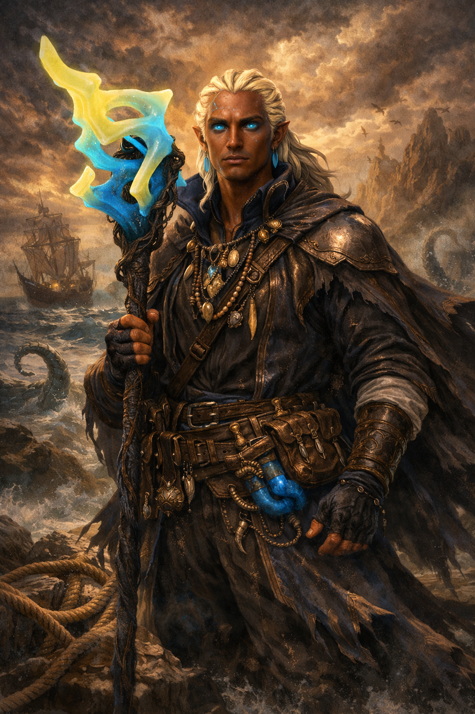
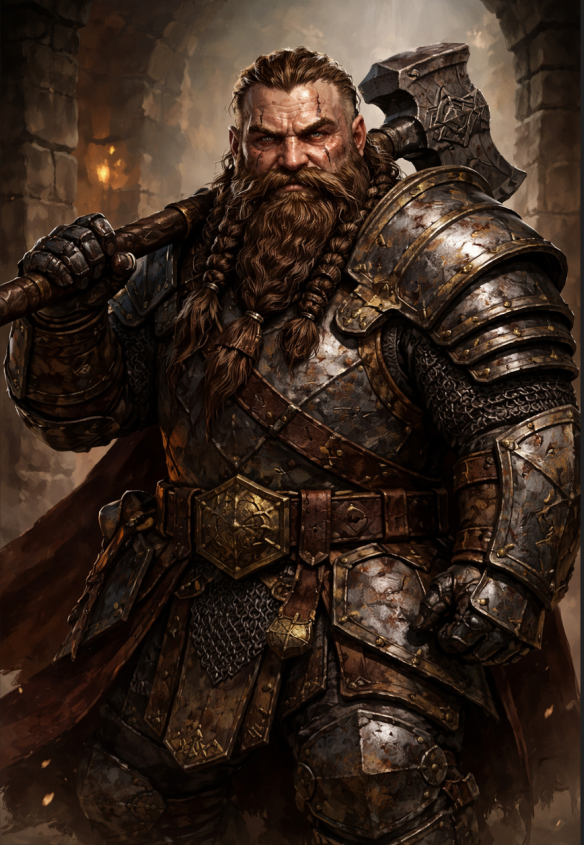
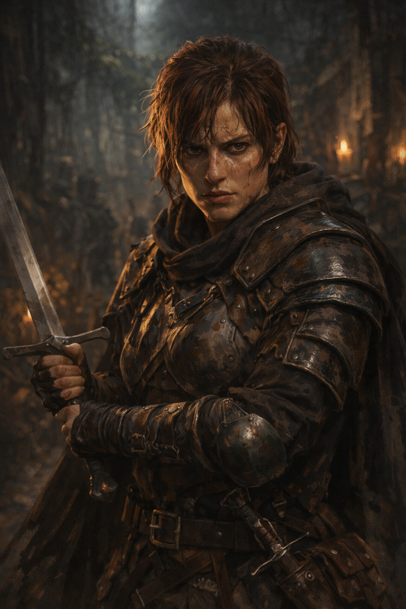
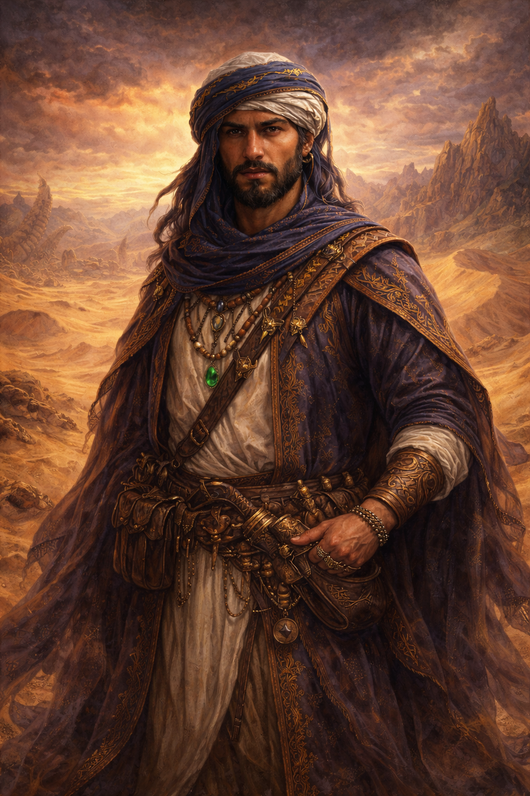
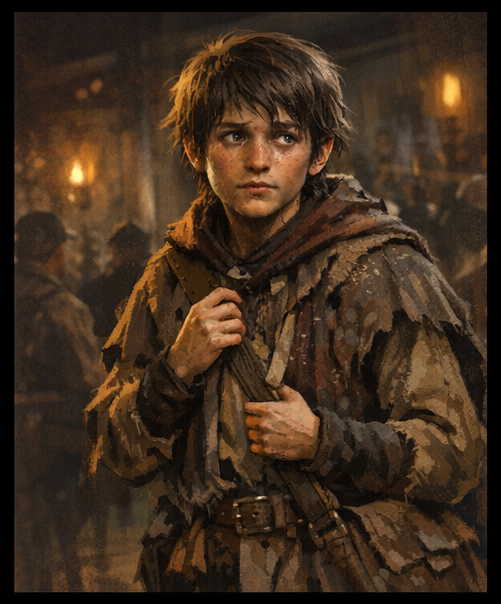
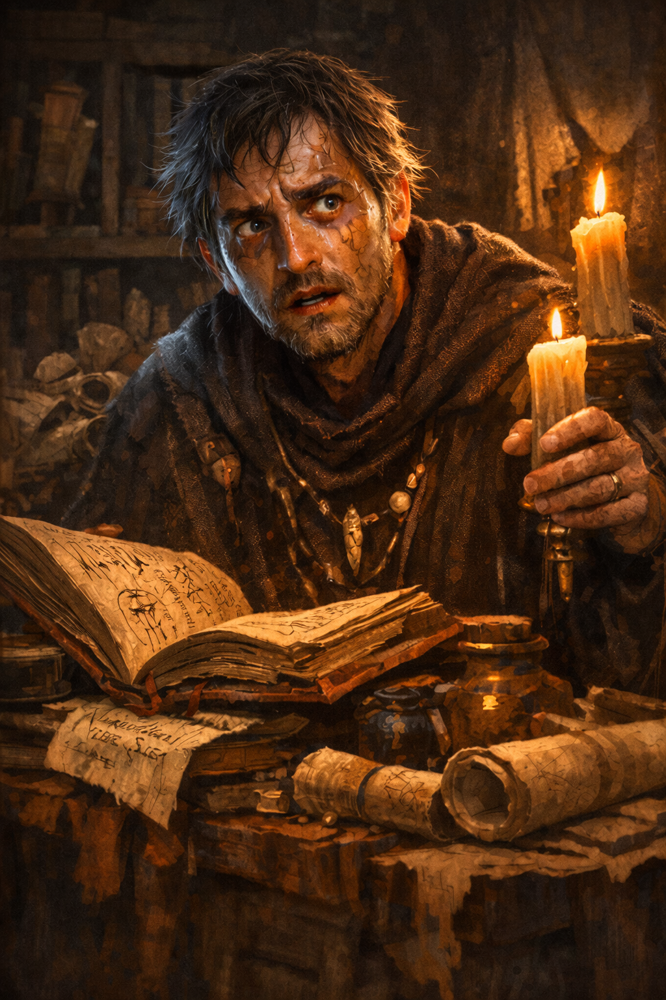

Přeživší z pustin

Čekajíno další obsah...

Šlechtic • pozorovatel
Kněžka • spojnice tří světů

Žoldnéřka • žena skutečnosti
Organizace • správcové rovnováhy

Prostředník • zajišťovatel pohybu
Organizace • nerv města
Interní • skrytá rozdělení moci

Posel • chlapec bez problémů

Rituální asistent • muž, který zašel příliš daleko
Dělník • muž, který poslouchá moře
𝕺̶̪̯͙̝̆̃𝖓̸̭͚̖̘̐́̕͝š̴𝖓̸̭͚̐́̕𝕺̶̪̯͙̝̖̘̆̃͝š̴𝖓̸̭͚̐́̕𝕺̶̪̯͙̝̆̃𝖓̸̭͚̖̘̐́̕͝š̴𝖓̸̭͚̐́̕𝕺̶̪̯͙̝̆̃𝕺̶̪̯͙̝̆̃𝖓̸̭͚̐́̕𝖓̸̭͚̐́̕
Magický předmět • klíč k paměti
Artefakt • cesta k mrtvým